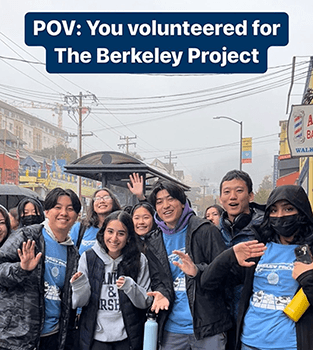

Rain or shine, Berkeley Bears are always down to volunteer!
Today, over 1,300 Cal students and local residents came together to volunteer for
The Berkeley Project — a student-led community impact initiative! Volunteers worked in groups and were
assigned to one of 38 site projects in Berkeley. As a result of everybody’s effort, including time spent
on event planning, the estimated total number of volunteer hours is over 5,400!
|

On a beautiful sunny day, Saturday, March 12, about
20 UC Berkeley volunteers helped with weeding in the Demonstration Garden on Old Tunnel Road.
The North Hills community Association garden committee, led by Celine Gyger, organized the event.
Several board members also joined in the work as well as Sue and Gordon Piper, who were the
original movers and shakers behind the gardens.
|